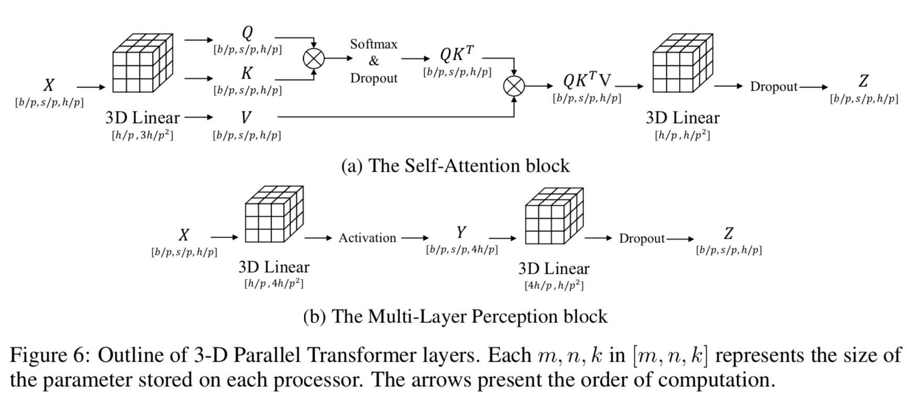

3D parallel Algorithm
Contents
3D parallel Algorithm
Authors: Kichang Yang, Kevin Ko, Minho Ryu

1D, 2D, and 2.5D, which have been previously proposed to address the challenges posed by large models. 1D tensor parallelism involves splitting the tensor along one dimension, while 2D tensor parallelism splits the tensor into rows and columns, reducing memory cost but introducing more communication. A 2.5D tensor parallelism algorithm has also been proposed based on the 2.5D SUMMA to reduce communication by using more devices. This algorithm involves splitting the input tensor into multiple layers and the weight tensor into multiple sub-tensors. Finally, the paper proposes 3D model parallelism technique to further harness the capability of GPU clusters. This technique divides both computation and memory of a single neural network among multiple GPUs in three dimensions, and is designed to address the limitations of 2D tensor parallelism.
Usage
Use ParallelMode.TENSOR_3D as a parameter of tensor_parallel_mode. tp_size should be a cubic of positive integer.
# model = defined in section 2.2
from oslo import ParallelContext
from oslo.torch.nn.parallel import TensorParallel
tp_size = 8
tp_depth = 1
parallel_context = ParallelContext.from_torch(
data_parallel_size=1,
pipeline_parallel_size=1,
tensor_parallel_size=tp_size,
tensor_parallel_mode=ParallelMode.TENSOR_3D,
)
model = TensorParallel(model, parallel_context)
oslo.ready(model, parallel_context)